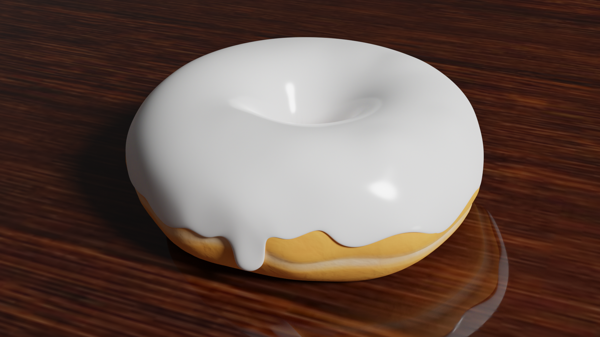
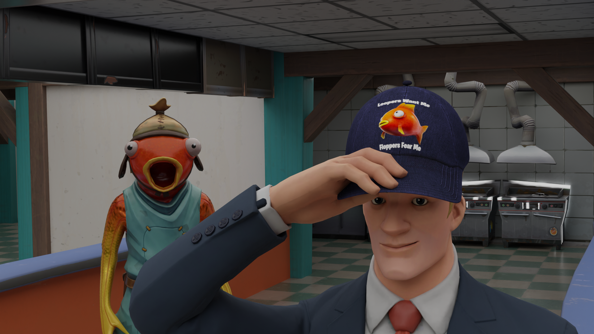
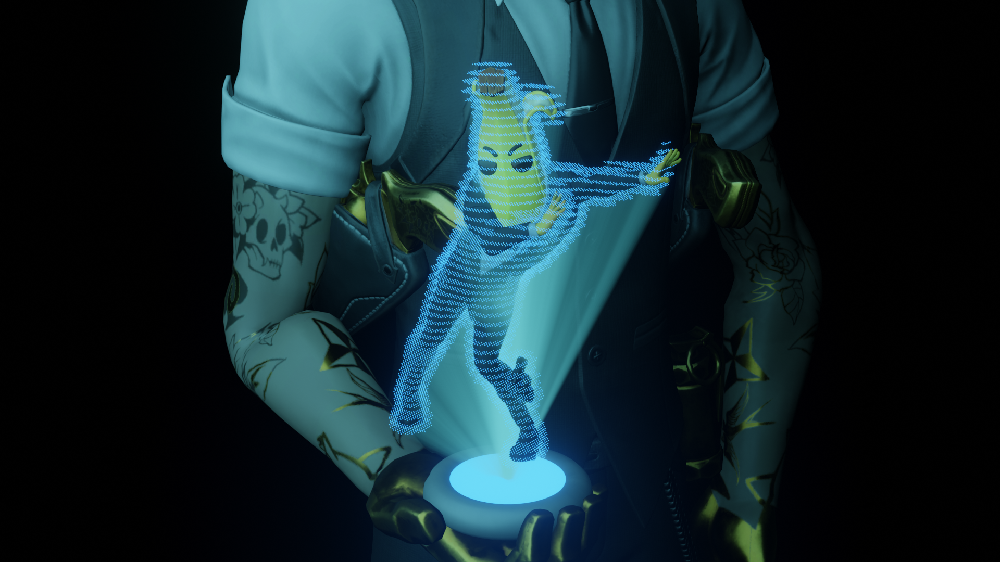
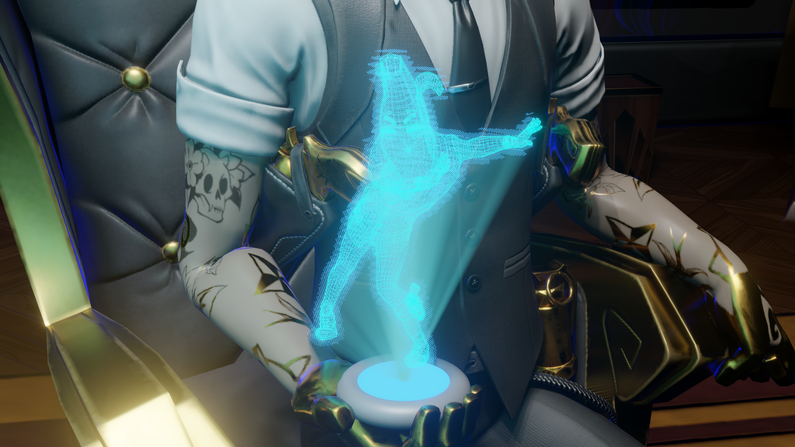

This is a showcase of most of my blender projects, some are full
projects, others are just quickly thrown together jokes. I'll update this page as I continue to finish more
projects.

The Fabled Donut Tutorial
Oct 22, 2022
This is the first render I ever made, of course following the donut
tutorial. Though I never finished the whole tutorial.

Flooper
Oct 23, 2022
This is the first render I ever made all by myself without any tutorials,
of course I had no clue what exactly I was doing. This render was based off a joke that I had thought of and
that joke was more or less the reason for me to start blender. This is also my first Fortnite based render.
Disaster Skye
Oct 26, 2022
This render was based upon the idea of recreating memes but within
blender and mostly with Fortnite models, this one being based on the "Disaster
Girl" meme. This was also the
first render to mess with fire domains and it shows because that fire is definitely rough. This render also
had a lot of posing to be done and it is also rough but not horrible.


Watching
Oct 29, 2022
This render stemmed from following a
tutorial on creating a hologram
effect on models. This project has a few different versions one with only the hologram, one with the
hologram and the model and another with the a wireframe and a background.
Fortnite Fracture
Nov 28, 2022
This was made mainly as a joke but it was also to test out the cell
fracture effect, I just used a pre made blend file for the background lodge. This was also the first
animated render I created.
Fortnite Fracture (I guess)
Dec 3, 2022
This was made mainly as a joke I made before the Fortnite Chapter 3
Fracture Event. I had no clue how to do outdoor lighting and also the hight map doesn't look that good. Also
some of these have odd names because on my computer most of the names are based around the joke or the main
content of the render.
Bunker Jonsey's Computer
Dec 30, 2022
Here is another project that follows the idea of recreating memes inside
blender, this time being a recreation of "Peter's Computer". This was also a first attempt to do a
animation
where I animated the character. I didn't know quite how to time things with keyframes yet so it doesn't
follow the same timing as the original video.
What Did You Do To The Zero Point
Dec 31, 2022
This set of two videos where made within the same blend file and where
loosely based off the Fortnite Zero Crisis Event. I created these after finding someone whole ported the
zero point into blender, the top video was made first then the bottom one after the fact.
Bonk
Dec 31, 2022
Thats the name of the file on my computer, don't know why. Anyways this
was just me messing with cell fracture again. Also I rendered this at 24fps, 30fps, and 60fps but now the
only one that I can find is the 30fps version.